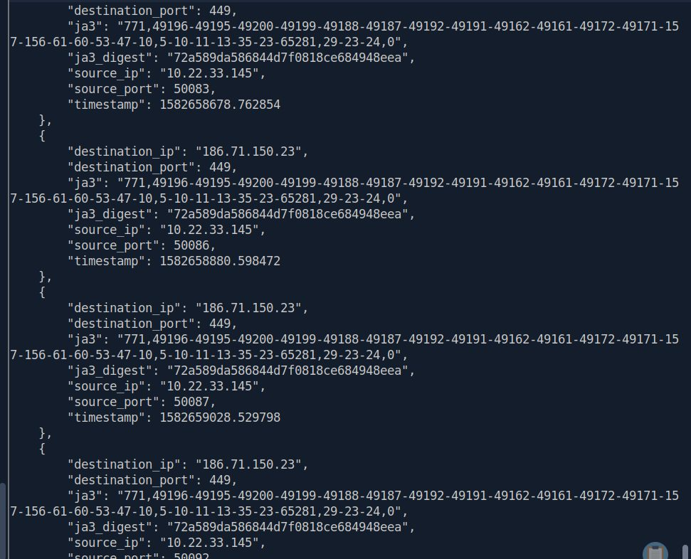
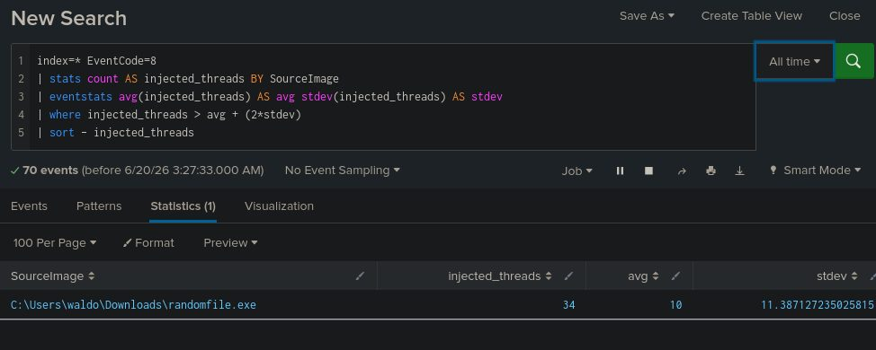
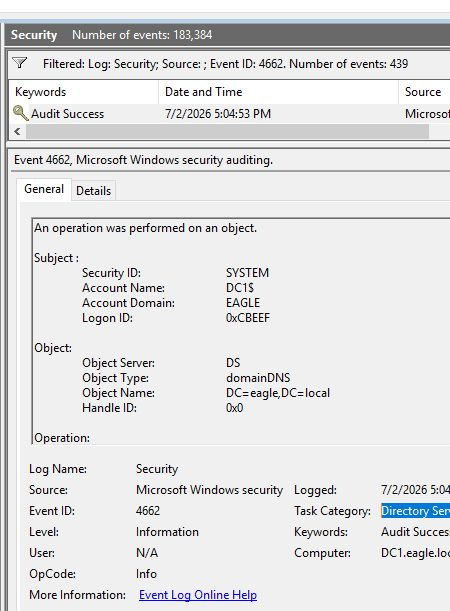
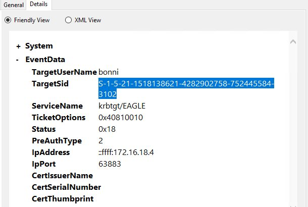
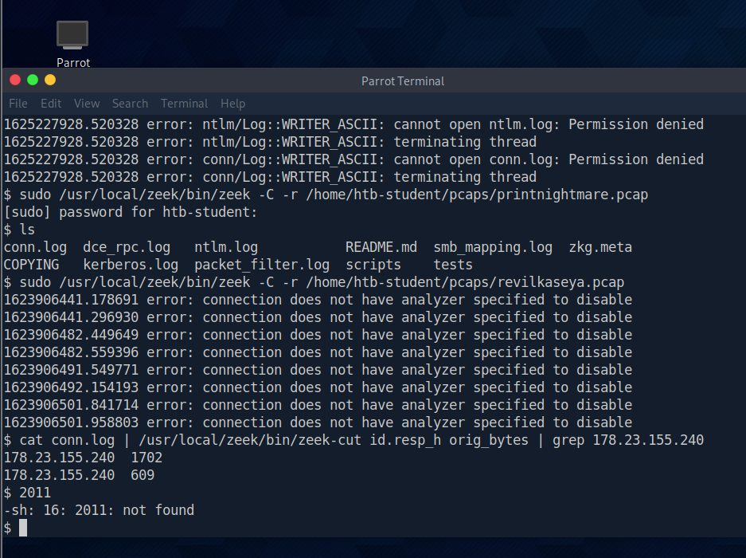
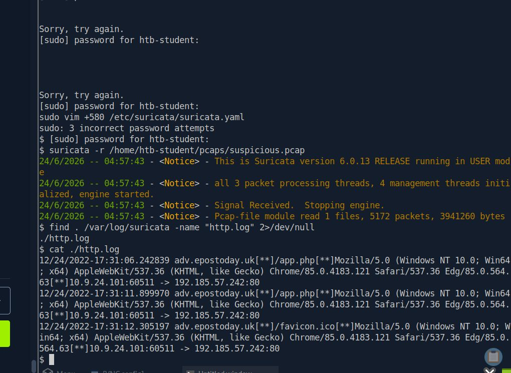
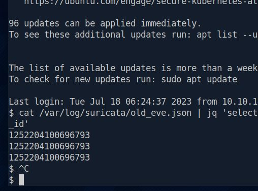

Seven SIEM findings.
Seven calls.
A Tier 1 shift log on an Elastic SIEM. Every finding gets a disposition and the reasoning behind it, including when it belongs with IT Operations rather than Tier 2.
- EscalateAuthentication attempts against a disabled account
- EscalateService account RDP into the PKI server
- EscalateAdmin logons outside the PAW policy, and a root SSH login
- IT OpsFailed logons for a service account; an unrecognised SID added to Administrators
Ten rules that say what
they'll get wrong.
Detection engineering. Each rule is mapped to MITRE ATT&CK and ships with its false positives and tuning notes. The bars show signal strength: four means near-zero false positives.
- PPID spoofingNear-zero baseline.Sigma
T1134.004 - Shadow copy deletionNear-zero baseline; a classic ransomware precursor.Sigma
T1490 - LSASS memory accessNeeds EDR and AV allowlisting.Sigma
T1003.001 - WMI lateral movementSCCM uses WMI too, so it needs filtering.Sigma
T1047 · T1021.003 - DLL search-order hijackInstallers create noise; the hardest of the ten to tune.Sigma
T1574.001 - Disabled-account authenticationSubStatus 0xC0000072 separates disabled accounts from ordinary failures.KQL
T1078 - Service account RDP logonBaseline is essentially zero, so any hit is meaningful.KQL
T1021.001 - Password sprayingCounts distinct users per source, the pivot per-account alerting misses.KQL
T1110.003 - Privileged group changesIncludes a self-elevation variant with no benign explanation.SPL
T1098 - C2 beacon detectionSignature, anomaly and JA3 fingerprint layers.Suricata
T1071 · T1573
From first execution
to impact.
MITRE ATT&CK coverage: nine tactics covered by my rules and investigations. Each ID links to its MITRE ATT&CK page.
What the work
actually looks like.
Seven moments from the twenty-six labs written up on this site — the point in each where a hypothesis turned into a finding. Every frame links to the full reasoning behind it.







Five years in Hack The Box labs, working attacks from both sides.
Since 2021, and verified. HTB's Half-Decade Hacksmith badge confirms five years of machines, challenges and Sherlocks. Academy profile DarkHexReaper: Level 36, rank Skilled.
The attacker's view makes detections precise. Breaking in shows how a technique really unfolds, so a rule can target what the technique can't avoid, not one tool's filename.
Built for the SOC floor. Every rule, hunt and investigation here is my own work, with tuning notes and escalation criteria written the way a Tier 1 analyst needs them at 3am.
- HTB Certified Defensive Security Analyst● Sep 2026
HTBCERT-88304FEA1D· certificate - HTB SOC Analyst job-role path● 18/18 modules
- Google Cybersecurity Professional● Mar 2026
GBEGPUJOSIJ7 - IELTS English · 6.5 (B2)● Certified
- Blue Team Level 1Planned next
Twenty-six labs,
each written up.
Tools and training. Full walkthroughs with the reasoning behind every step. Graded HTB answers are masked, per HTB's publication guidance.
Toolkit
What I work in
- SIEMElastic, Kibana, Splunk
- QueriesKQL, SPL, EQL
- EndpointSysmon, Windows logs
- NetworkSuricata, Zeek, Wireshark
- DetectionSigma, ATT&CK mapping
- ResponseNIST IR lifecycle
HTB Academy
CDSA path · 11 modules
Google Cybersecurity
15 labs · 6 sets of notes
Hiring for a SOC team?
Let's talk.
Available immediately for SOC Analyst and Blue Team roles, including 24×7 rotational shifts, remote, hybrid or on-site. Happy to walk through any rule or decision on this site.